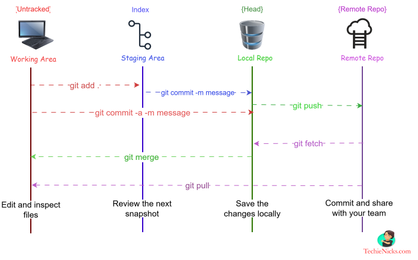

Video walkthrough
History
What is version control?
Version control is a system that helps track and manage changes to files, especially in software development. It lets multiple people collaborate on a project without overwriting each other's work, and keeps a history of every modification. It helps with:
- Tracking changes — every modification is recorded, making it easy to revert to a previous version if needed.
- Collaboration — multiple developers can work on the same project simultaneously without conflicts.
- Backup & recovery — if something goes wrong, you can restore an earlier version.
- Branching & merging — developers can create separate branches for new features or bug fixes, then merge them back into the main project.
Version control systems (VCS) help developers track changes, collaborate efficiently, and manage different versions of a project. VCS fall into three main types:
- Local Version Control (LVCS):
- Changes are stored locally on a single computer.
- Each modification is saved as a patch, making it difficult to collaborate with others.
- Risk of losing data if the local system fails.
- Centralized Version Control (CVCS):
- A single repository stores all versions, and users must connect to it to access or modify files.
- Examples: Subversion (SVN), Microsoft Team Foundation Server (TFS).
- Easier collaboration but has a single point of failure—if the central server crashes, all history could be lost.
- Distributed Version Control (DVCS):
- Each user has a full copy of the repository, allowing offline work and better redundancy.
- Examples: Git, Mercurial.
- More flexible and resilient, as changes can be merged from multipe sources.
Git references
Limitations of centralized version control
Before Git, developers relied on centralized version control systems, which had real limitations: single points of failure and restricted offline work. Developers couldn't keep their own copy of the repository, so they couldn't work offline independently.
- Single point of failure — if the central server crashes, all history and collaboration are lost unless backups exist.
- Requires constant connectivity — developers must be connected to the central server to commit changes or access previous versions.
- Limited offline work — unlike DVCS,no independent access to the central repository.
- Slower performance — every operation talks to the central server, which can slow down workflows.
- Risk of data loss — If the central repository is corrupted or compromised, all data could be lost unless proper backups are maintained.
These drawbacks led to the rise of Git, which offers a distributed approach for better flexibility and resilience. Git was created to address the challenges of managing code efficiently, especially in large-scale projects with multiple contributors.
What was the need for Git?
- Distributed version control — every developer has a full copy of the repository, enabling offline work.
- Efficient collaboration — branches let people work on different features simultaneously using branches, then merge their changes without disrupting the main codebase.
- Change tracking — a detailed history makes it easy to revert.
- Performance & speed — optimized for large projects, ensuring quick operations even with extensive codebases.
- Security & integrity — every change is stored using cryptographic hashing, preventing accidental or malicious alterations.
What is Git?
Git is a distributed version control system that helps developers track changes, collaborate efficiently, and manage different versions of a project. It was created by Linus Torvalds in 2005 to manage the Linux kernel, but its advantages quickly made it industry standard.
- Version control — keeps a history of all changes, allowing developers to revert previous version if needed.
- Branching & merging — Developers can create separate branches to work on new features or fixes, then merge them back into the main project.
- Collaboration — Git enables multiple developers to work on the same project without overwriting each other’s changes.
- Performance — It is fast and efficient, even for large projects.
What "distributed" means
In Git, every developer has a complete copy of the repository — including its entire history — on their local machine. Unlike centralized systems, Git lets developers work independently without needing constant access to a central server.
Git vs GitHub
Git is the engine; GitHub is the garage where teams collaborate.
- Git is a distributed version control system that runs locally on a developer's machine and allows developers track changes in their code, collaborate efficiently, and manage different versions of offline work.
- GitHub is a web-based platform that hosts Git repositories, adding additional collaboration tools like pull requests, issue tracking, and project management.
Key differences
| Feature | Git | GitHub |
|---|---|---|
| Type | Software | Hosting service |
| Function | Version control | Repository management |
| Installation | Local | Cloud-based |
| Collaboration | Command-line based | Web interface with extra tools |
| Ownership | Open-source (Linux Foundation) | Owned by Microsoft |
Alternatives
- GitLab — a complete DevOps platform with built-in CI/CD and issue tracking.
- Bitbucket — a good fit for teams already using Atlassian tools like Jira.
- SourceForge — supports multiple version control systems, including Git and SVN.
- Gitea — a lightweight, self-hosted Git service.
- Beanstalk — version control with built-in code review and deployment tools.
Git lifecycle
Every change moves through a handful of areas on its way from your editor to a shared remote.
Git Cheat Sheet
One page of the commands you reach for most, ready to save or print.

Stash
- git stash — Stash current changes.
- git stash list — View stashed changes.
- git stash pop — Apply and remove the latest stash.
- git stash apply — Apply the latest stash without removing it.
- git stash drop — Delete a specific stash.
A temporary locker for changes you're not ready to commit yet.
Workspace
(working directory)
- git status — Show changes in the working directory and staging area.
- git diff — View unstaged changes.
- git checkout --<filename> — Discard changes in a file.
- git clean -fd — Remove untracked files and directories.
Where you create or modify files. Changes here aren't yet tracked by Git.
Index
(staging area)
- git status — Show changes in the working directory and staging area.
- git add <filename> — Stage a file
- git add . — Stage all changes
- git reset <filename> — Unstage a file
- git diff --cached — View staged changes
Where you prepare changes before committing.
Local repository
- git commit -m "commit message" — Commit staged changes
- git log — View commit history
- git reset --soft HEAD^ — Undo last commit, keep changes staged.
- git reset --hard HEAD — Reset to last commit, discard all changes
Where committed changes are stored locally.
Upstream
(remote repository)
- git remote -v — Show remote URLs
- git fetch — Get changes from remote without merging
- git pull — Fetch and merge changes from remote
- git push — Push local commits to remote
- git clone <url> — Clone a remote repository
The shared repository for collaboration — e.g. GitHub.
Walkthrough: stash, fix, and return
Scenario: you're mid-feature but need to fix a bug on main right
now.
Stash your work, switch branches, fix the bug, then come back.
# 1. Start from a feature branch — you're now in the workspace
git checkout -b feature/login-form
# 2. Make some changes, check status
git status
# 3. Stage one file
git add login.js
# 4. Stash both staged and unstaged changes
git stash push -m "WIP: login form"
# 5. Switch to main and fix the bug — this commit lands in the local repository
git checkout main
git add app.js
git commit -m "Fix: crash on login redirect"
# 6. Push the fix to the remote repository
git push origin main
# 7. Return to the feature branch
git checkout feature/login-form
# 8. Reapply the stash — files are restored as they were
git stash pop| Git area | What happened |
|---|---|
| Workspace | Edited files like login.js and style.css |
| Staging area | Staged login.js before stashing |
| Stash | Saved both staged and unstaged changes temporarily |
| Local repository | Committed the bug fix to the local repo |
| Remote repository | Pushed the fix to GitHub (or another remote) |
Download & installation
- Go to the Git downloads page.
- Pick your platform (macOS / Windows / Linux) — it recommends the latest release automatically.
- Download and install it for your OS.
Configuration
Step 1: generate an SSH key pair
- Open a terminal (Git Bash on Windows, Terminal on macOS/Linux).
- Generate a new RSA key pair:
Replace the email with your GitHub email.ssh-keygen -t rsa -b 4096 -C "your_email@example.com" - Press Enter to accept the default file location
(
~/.ssh/id_rsa). - Optionally add a passphrase for extra security.
Step 2: add the key to the SSH agent(using gitbash/terminal)
eval "$(ssh-agent -s)"
ssh-add ~/.ssh/id_rsaStep 3: add the key to GitHub
- Copy the public key:
cat ~/.ssh/id_rsa.pub - In GitHub, go to Settings → SSH and GPG keys.
- Click New SSH Key, paste it in, and save.
Step 4: test the connection
ssh -T git@github.comOn success you'll see something like:
Hi username! You've successfully authenticated, but GitHub does not provide shell access.First configurations
| Purpose | Commands |
|---|---|
| Set identity — Git needs a username and email for commits | git config --global user.name "Your Name"git config --global user.email "your_email@example.com"
|
Default branch name — Git defaults to master; switch to
main
|
git config --global init.defaultBranch main |
| Line endings (Windows vs macOS/Linux) | Windows: git config --global core.autocrlf truemacOS/Linux: git config --global core.autocrlf input |
| Default editor for commit messages | git config --global core.editor "code --wait" (VS Code)git config --global core.editor "vim" (Vim)
|
| Enable credential caching | git config --global credential.helper cache |
| View all current settings | git config --list --show-origin |
Use cases
Connecting to a remote repository
Assuming you already have a repository on GitHub and its URL.
- Navigate to the folder where you want to clone it, open a terminal there, and run:
git clone https://github.com/your-organization/repository-name.git - Move into the cloned repository:
cd repository-name - Confirm the remote is set correctly:
If needed, add it:git remote -vgit remote add origin https://github.com/your-organization/repository-name.git - Pull updates regularly (replace
mainwith your default branch if different):git pull origin main - If there's a merge conflict, resolve it manually, then:
git add . git commit -m "Resolved merge conflicts" git push origin main
Syncing local changes to the remote
Keeps your local branch up to date and your contributions integrated with everyone else's.
# 1. Check what's changed
git status
# 2. Stage changes
git add . # everything
git add filename # or a specific file
# 3. Commit with a meaningful message
git commit -m "Updated files with latest changes"
# 4. Pull the latest changes before pushing (replace main if different)
git pull origin main --rebase
# 5. Push
git push origin main
# 6. Verify
git log --oneline -n 5